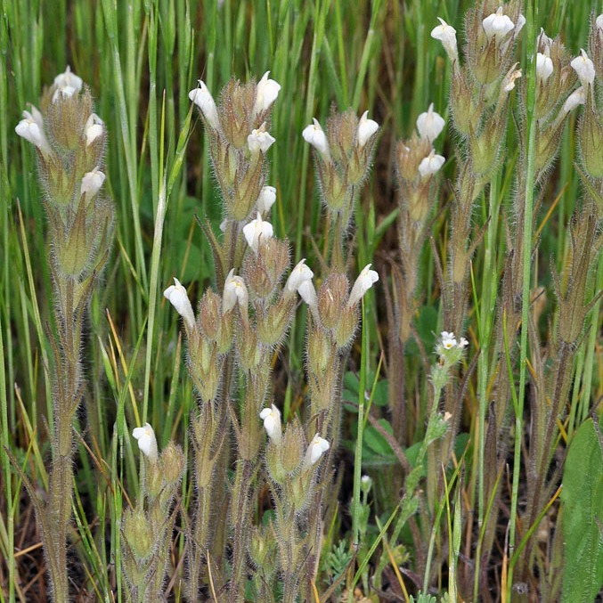
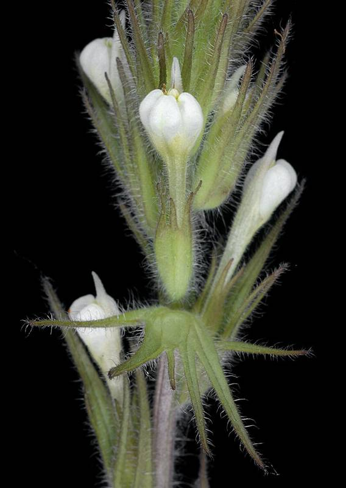

Castilleja tenuis
- Common name
- Hairy Owl's Clover
- Family
- Orobanchaceae
- Family common name
- Broomrape Family
- Blooms
- April - August
- Habitat
- Moist, open fields, meadows, at low to mid elevations.
- Stature
- 4-18", upright, stems finely hairy. Annual.
- Leaves
- Long, thin, pointed.
- Florets
- Flower bracts less than 1 inch long, with 3-7 thin, lance-shaped lobes, green or slightly tipped with dull reddish-brown, not showy. Flowers white, occasionally yellow. Flower beak straight, extending just beyond bracts.
Range Map
OR Flora